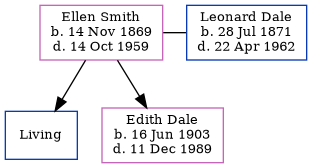

Ellen Elizabeth Dale (née Smith) 1869 - 1959
[ Home ] | [ Calendar ] | [ Surnames Index ] | [ Errors ] | [ Family History ]Ellen Smith, the wife of Leonard Dale (the great-great-uncle of Nigel Horne), was born in Swalecliffe, Kent, England on 14 Nov 18691,2,3,4,5 and married Leonard (a boiler attendant brickworks with whom she had 2 children: George and Edith Kate, along with 1 surviving child) at St Mary's Church, Chartham, Kent, England on 14 Mar 18968.
During her life, she was living in Ivychurch, Kent, England in 18811; at 88 Church Hill, Temple Ewell, Kent on 31 Mar 190111; at 12 Douglas Road, Dover, Kent on 2 Apr 191110; at Widred Road, Dover, Kent in 19219 and on 19 Jun 192112; and at Fern Cottage, Uckfield, Sussex, England on 29 Sept 19394.
She died on 14 Oct 1959 in Danehill, Sussex, England6,7.
Children
- Edith Kate was born on 16 Jun 1903
Citations
- 1881 England Census Online publication - Provo, UT, USA: The Generations Network, Inc., 2004. 1881 British Isles Census Index provided by The Church of Jesus Christ of Latter-day Saints © Copyright 1999 Intellectual Reserve, Inc. All rights reserved. All use is subject to the (Relation to Head of House: Daughter)
- 1901 England Census Online publication - Provo, UT, USA: The Generations Network, Inc., 2005.Original data - Census Returns of England and Wales, 1901. Kew, Surrey, England: The National Archives of the UK (TNA): Public Record Office (PRO), 1901. Data imaged from the National
- 1911 England Census Online publication - Provo, UT, USA: Ancestry.com Operations, Inc., 2011.Original data - Census Returns of England and Wales, 1911. Kew, Surrey, England: The National Archives of the UK (TNA), 1911. Data imaged from the National Archives, London, England.
- 1939 Register - Findmypast (was the wife of the head of the household)
- England & Wales, FreeBMD Birth Index, 1837-1915 Online publication - Provo, UT, USA: The Generations Network, Inc., 2006.Original data - General Register Office. England and Wales Civil Registration Indexes. London, England: General Register Office. © Crown copyright. Published by permission of the Cont
- England & Wales, Death Index: 1984-2005 Online publication - Provo, UT, USA: The Generations Network, Inc., 2007.Original data - General Register Office. England and Wales Civil Registration Indexes. London, England: General Register Office. © Crown copyright. Published by permission of the Cont
- England & Wales, National Probate Calendar (Index of Wills and Administrations),1861-1941 Online publication - Provo, UT, USA: Ancestry.com Operations Inc, 2010.Original data - Principal Probate Registry. Calendar of the Grants of Probate and Letters of Administration made in the Probate Registries of the High Court of Justice in England. Londo
- England & Wales, FreeBMD Marriage Index: 1837-1915 Online publication - Provo, UT, USA: The Generations Network, Inc., 2006.Original data - General Register Office. England and Wales Civil Registration Indexes. London, England: General Register Office. © Crown copyright. Published by permission of the Cont
- 1921 Census Of England & Wales - Findmypast
- 1911 Census for England & Wales - Findmypast (was age 41 and the wife of the head of the household)
- 1901 England, Wales & Scotland Census - Findmypast (was age 31 and the wife of the head of the household)
- 1921 Census Of England & Wales - Findmypast (was age 51 and the wife of the head of the household)
Media
1939 Register Transcription - TNA-R39-2563-2563G-014-17
1901 England, Wales & Scotland Census - GBC/1901/0005545708
Family Tree
Map
Generated by ged2site. Last updated on Jul 3, 2024
Known Issues
No records of living with anyone
Census information missing between 1881 England Census and Census UK 1901